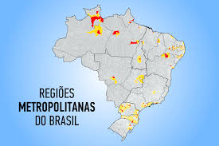

Região Metropolitana de Porto Alegre
O que é Região Metropolitana?
A região metropolitana é uma área geográfica formada por uma cidade principal (geralmente grande) e seus municípios vizinhos, que estão integrados economicamente, socialmente e administrativamente. Esses municípios têm uma forte conexão com a cidade central, especialmente em termos de deslocamento de pessoas para trabalho, comércio e serviços. A criação de regiões metropolitanas visa melhorar a gestão e o planejamento conjunto de políticas públicas, como transporte, saneamento e habitação, para otimizar os recursos e resolver problemas comuns da região.
